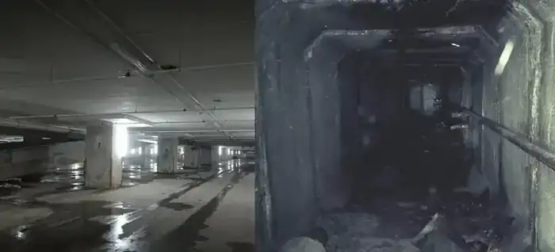
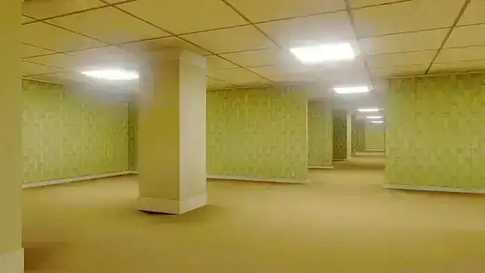
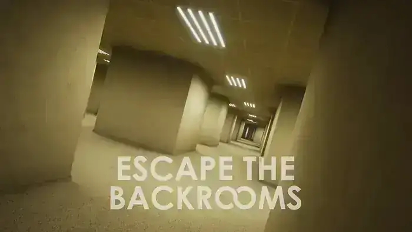

The post
In May 2019, an anonymous post on 4chan's /x/ board asked for “unsettling images that just feel off”. One reply was a photograph of a yellow-walled room with damp carpet, fluorescent lights and no windows. Another user wrote the caption that became the canon:
Maps, diagrams and images






“If you're not careful and you noclip out of reality in the wrong areas, you'll end up in the Backrooms, where it's nothing but the stink of old moist carpet, the madness of mono-yellow, the endless background noise of fluorescent lights at maximum hum-buzz, and approximately six hundred million square miles of randomly segmented empty rooms to be trapped in. God save you if you hear something wandering around nearby, because it sure as hell has heard you.”Anonymous, 4chan /x/, 2019
That is the whole original text. Everything else — the “levels”, the entities, the rules, the factions — was built afterwards by other people.
Where the photograph came from
The image itself was not a staged render. Internet sleuths traced it to a photograph of a hobby shop interior during a renovation, posted online years earlier — an ordinary, badly lit room that happened to be empty. The banality is the point: it looks like somewhere you have been, with the people removed.
This is the same mechanism as the Polybius legend in reverse. Polybius invents an artefact and no image survives; the Backrooms starts with a real image and invents everything else.
How it became a genre
The lore grew on wikis — “Level 0”, “the Hub”, entity descriptions, survival guides — written collaboratively and inconsistently, which is normal for folklore. Then, from 2022, the filmmaker known as Kane Pixels released a series of found-footage videos set in the Backrooms, which did something the wikis could not: they made the place feel physically real, with camcorders, motion and sound design.
A feature adaptation has been announced, which is how internet folklore becomes intellectual property now.
Liminal-space horror runs on recognition without belonging. The Backrooms is a place you have been — a corridor, an office, a hotel — with every cue of human presence removed except the ones that imply someone was just here. The hum, the carpet, the windowless yellow: those are the textures of institutions that do not care whether you are comfortable. The fear is not of a monster. It is of being somewhere that was not built for you and does not end.
Filed as fiction, and why that matters
Nobody claims the Backrooms is real, and that is exactly why it belongs in the archive as a comparison case. It shows what a healthy piece of weird fiction looks like: a clear origin, a community that knows it is building a story, and no attempt to recruit anyone into believing it.
Set it beside Tartaria, which has the same aesthetic appeal — grand, eerie, unexplained, suggestive of hidden architecture — but makes claims about the real world and demands that contradicting evidence be explained away. The difference is not the strangeness of the image. It is what the story asks you to do with your beliefs.
The Wyoming Incident: a hijacking that never happened, next to one that did
The creepypasta: in 1987, a hacker interrupted a local Wyoming television broadcast and aired a sequence of disembodied human heads with disorienting audio, causing nausea, migraines and hallucinations in viewers before the signal was cut.
There is no record of it. No FCC action, no station log, no newspaper report, no viewer complaint. The story circulates with a video attached, and the video is an animation — the heads are rendered, and the “broadcast” is a digital composition. It is a piece of fiction that borrowed the authority of a real genre of event.
The real event in that genre is the Max Headroom incident: on 22 November 1987, two Chicago television broadcasts were interrupted by someone in a Max Headroom mask, with distorted audio and a grinning figure, in a signal intrusion that was never solved. That one has everything the Wyoming story lacks — a date, a station, a recording, an investigation — and is genuinely eerie.
The pattern is worth naming: invented events borrow credibility from real ones and then get remembered as the more famous version. See the Polybius entry for the same trade in arcade cabinets.
Sources for this page
- Wikipedia, “The Backrooms” — the 2019 post, lore, adaptationsen.wikipedia.org
- Know Your Meme, “The Backrooms” — archive of the original thread and imageknowyourmeme.com
- Kane Pixels, The Backrooms (2022–) — found-footage seriesyoutube.com
Open resources on this topic
- BookA Letter To Reality The Backrooms (Internet Archive, free to read)
- BookThe Backrooms Wiki The Backrooms — ShorrmDispenser · 2012 (Internet Archive, free to read)
- BookTattooed on their tongues : a journey through the backrooms of American music — Escott, Colin. aut · 1996 (Internet Archive, free to read)
- PapersOpen-access articles: DOAJ · PubMed Central · Internet Archive Scholar
- BooksPublic-domain and borrowable copies: Open Library · Project Gutenberg · Google Books
Cite this page
Momin, S. (2026). The Backrooms. The Larger World Archive. https://drsamonline.github.io/LARGE_GLOBE/backrooms.htmlMomin, Sohil. “The Backrooms.” The Larger World Archive, 2026, https://drsamonline.github.io/LARGE_GLOBE/backrooms.html.Momin, Sohil. “The Backrooms.” The Larger World Archive, 2026. https://drsamonline.github.io/LARGE_GLOBE/backrooms.html.@misc{the2026backrooms,
author = {Momin, Sohil},
title = {The Backrooms},
year = {2026},
howpublished = {The Larger World Archive},
url = {https://drsamonline.github.io/LARGE_GLOBE/backrooms.html},
note = {Last reviewed 20 November 2026}
}Last reviewed 20 November 2026 · Corrections policy · this page is not peer reviewed